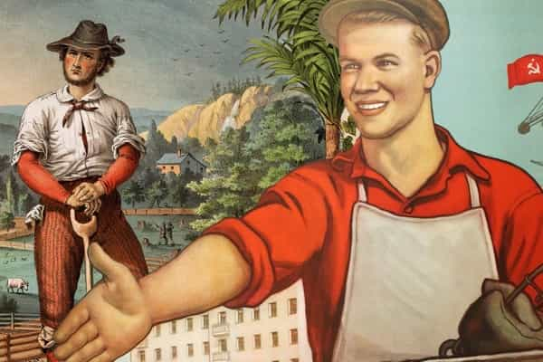
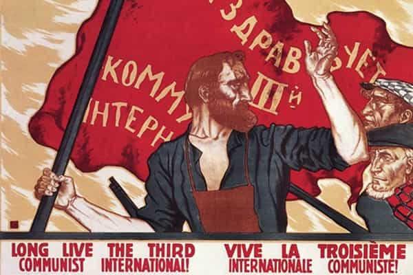
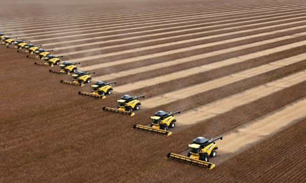

André is a young European who left his decaying country in 2012 for greener pastures. He enjoys exploring subterranean places, reading about a host of interconnected topics, and yearns for Tradition.


Our parents were taught at school that the world split up between capitalism and communism. For some, capitalism was to be equated with freedom and Western civilization—and it ominously slipped towards Big Corp and tax cuts for billionaires—whereas communism was an absolute threat. For others, communism was cool, generous, and one had to be a Leftist to be a good guy because being on the Right meant to be either a greedy abuser or a pathetic hillbilly.
When faced with such a worldview, especially when one realizes how it fails to address many issues, one can ask: is there a third way? The official answer has been rather nefarious: no, there is only one way, capitalism and communism have fused into the end of history, global governance, and “social liberalism” or social democracy. Under the guise of overcoming contradictions and negativity, this “end of history”, as Francis Fukuyama had said, was a direct denial of autonomy and free-will. In the end, we can be grateful that the wannabe global managers’ mask has slipped, revealing raw lust for power and hysteria.
Actually, there has been a third way all along. It appeared recurrently in the margins of the mainstream and was more or less subtly, but always harshly, repressed by the System. Sometimes it has been allegedly endorsed by individuals such as Hakim Bey, who marketed himself as an anarchist and sold many books by babbling about “autonomous zones”, which in practice amounted to smoking pot in abandoned buildings while endorsing globalism. In truth, the third way has been embodied by defenders of middle class capitalism, such as those who were purged from the Republicans or either recuperated or evilized by the Left.
The dualist, capitalism-versus-communism, then social-democracy-versus-neoconservatism choice, is merely a pick between two strands of globalistic managerialism. The former leans more towards public bureaucracy, the latter is more in tune with private shareholders—although both are— and this makes absolutely no difference for the average downsized. Both destroy the citizens’ ability to self-determination, and if you look closely, the managerial “dream” has constantly used proletarians while pushing the independent producers aside.

Capitalism and communism, just as social democracy and neoconservatism, all have one thing in common: they are urban ideologies, made and spread in towns among town-dwellers. We are oblivious to this fact because living in an urban environment looks too obvious, too ordinary, for us to notice. Yet consider the following: from immemorial times, the wide majority of people have been peasants. Traditional civilizations, including medieval Europe, were mostly made of husbandmen, able to grow crops, make tools and raise animals. Those who did this work were either gentry and independent farmers or serfs, reflecting the traditional caste division between Vaishya—free makers, tradesmen—and Shudra—dependent individuals who couldn’t manage themselves and could only serve the higher castes.
Only a few towns existed, and compared with today, they were quite small:
In the year 1800 Europe was still overwhelmingly rural, the vast majority of its inhabitants (thus numbering only 150.000.000) living in the country. This was even true of those nations today most thoroughly urbanized. In England and Wales, for example, where four-fifths of the population are now townsfolk, five-sixths of the population then lived in the country. In the year 1800 only two [European] cities, London and Paris, contained more than 500.000 inhabitants, while Berlin had fewer than 200.000. (Lothrop Stoddard, Social Classes in Post-War Europe, 1925, pp.6-7)
These towns were on the path of trading routes, between business and political power.
Then came the industrial revolution. As the steam engine was mastered and perfected, mass transport became available and cheap. Big banks invested in industrial projects, huge factories were built close to the cities. As all these machines needed arms to work on them, the population grew enormously, massive amounts of goods were mass-produced, and Europe imported lots of food from the whole world to feed these workers.
This situation had (almost?) no historical precedent. The cities turned into production centers, each connected with other ones through transportation means of enormous capacities. Most importantly, the majority of the new city-dwellers did not own their means of production, and more often than not their homes as well: they were proletarians, forced to sell their manual abilities to make a living. Far from nature, depending from a complex system they did not own and often did not understand, proles were very different from the self-owned, independent, food-producing peasants.
More numerous than Middle Ages serfs, more gregarious and prone to group identitarianism, the proletarians soon clashed with the peasants. Indeed, the proletarians’ interests coincided with the wealthy merchants’. When free trade began to soar, farmers knew that importing food from all continents would mean a lot of competition and the need for them to produce more while earning less: at the beginning of the nineteenth century, they were influential enough to push for regulation. But later, as the cities—proles and bourgeois—gained power, the power equilibrium was disrupted, and in Great Britain a motivated lobby managed to repeal the regulating Corn Laws in 1846.
The effects were disastrous to the peasants and gentry alike, as well as to national autonomy:
In 1877 the price of British-grown wheat averaged 56 shillings and 9 pence a quarter and for the rest of the nineteenth century it never reached within 10 shillings of that figure. In 1878 the price fell to 46 shillings and 5 pence. In 1886 the wheat price decreased to 31 shillings a quarter. By 1885 wheat-growing land declined by a million acres (4,000 km²) (28½%) and the barley area had dwindled greatly also. Britain’s dependence on imported grain during the 1830s was 2%; during the 1860s it was 24%; during the 1880s it was 45%, (for wheat alone during the 1880s it was 65%.) (Source)
The split did not run between capitalists and communists, or between owners and non-owners, but between the urban and the countrymen. Proletarians did not care about independence, as they had already lost even the sense of it. They only cared about having cheaper food, improved material life conditions, and work—and all this was favoured by “free” global trade.

On the beginning of the twentieth century, the countryside had lost much of its weight and significance. The metropolis mastered market prices through importation and exportation of mass quantities. At the side of blue collars were the intellectuals, who more often than not perceived the urban life, fashions and “progress” as much cooler than toiling the land. Congested cities were full of men who had lost the sense of nature, who were often dependent from a tight elite of wealthy bankers, and it made the autonomous farmers miserable.
Then came the Great War. Then many people realized that towns do not grow food. As the war raged, the international transportation system mostly stopped working; all importations were cut down, and the urban population found itself deprived of nourishment. The governments reacted by rationing food, but even then, a black market formed and many farmers were able to sell some of their harvest at a huge price. Alas, the artificial cosmopolitan system was rocking to its foundations! And the nature-despising, “progressive” town-dwellers were forced to acknowledge at least tacitly that “the town cannot live without the country, but the country can live without the town” (Stoddard, Social Classes…, p.40).
In 1918, the farmers who had survived the war had become important and powerful again. Some who had turned poor used their profits to buy up the land they were working. Shrewd and realistic, the farmers knew that factory workers did not give a damn about them and favoured a world where international trade would be restricted, so that their relative autonomy could be maintained, and never shattered by the international merchants.
In spite of the war, farmers from all Europe, mostly on the East, managed to network with each other. In 1921, four political parties, then seventeen joined to create the International Agrarian Bureau or first Green International, a confederation of self-owned middle classers willing to fight for their independence.
Bolshevism were raging, and communists tried to recuperate the movement. In 1923, they created the Red Peasant International. In vain:
The peasant had one simple, tangible objective—the land. Once possessed of the land, he desired to settle down and enjoy it for his own individual profit. He realized the value of his produce, and he expected the townsman—capitalist, bourgeois, or proletarian—to pay him his price… Why should [the farmer] socialize his land?… What was [collectivization] but a new form of urban predominance—a predominance no less hateful to the peasant because exercised by factory workers instead of by aristocrats and bourgeois, as in former days? (Stoddard, Social Classes…, pp.18-9)
This is a key point. During the nineteenth century, urban proles were OK with gauging farmers or forcing them into a cutting throat competition so that they could eat for a cheaper price. Later, when the same proles had converted to Communism, they would ask for seizing the land and having it cultivated by proletarized farmers. No one would be allowed to remain independent or self-owned, the wealthy global elite aside. Later again, the factory workers would see no problem in the “modernization” plan destroying independent farmers and tradesmen by building State-funded large-scale estates along with hypermarkets, both reducing prices thanks to scale economies: as long as they could keep masturbating on the “dictatorship of the proletariat”, these masses actually supported the proletarization of the whole world.
Once again, the fault line does not stand between capitalists and communists. It stands between a third caste of farmers, craftsmen, shopkeepers who struggles to remain self-owned—middle class—and a conglomerate of town-dwellers who push for everyone to be under the sway of almighty managers. The private or public status of said managers is irrelevant: a civil servant and a Big Corp CEO think alike, especially if the latter is deemed “too big to fail.” It will be worthwhile to notice that defenders of an independent third caste, such as Pierre Poujade, have been constantly demonized and expelled from mainstream politics: they are a real opposition to a managerialism that wants to crush any opposition it does not control.

During the 20s, when Bolsheviks attempted coups in European countries, the free armies—Freikorps—who defeated them and saved civilization were mostly composed of countrymen and middle classes. It briefly looked like the Green International could win. Unfortunately, the globalists showed a malignancy no farmer wisdom could foresee: “Russian” Bolsheviks preferred mass starvation to any hint of a powerful country side, and this is how millions of peasants were wilfully starved.
On the West, things underwent a subtler but identical course of dispossession. The European Union pushed for intensive farming and large, mechanized estates, so that the small farmer would have no choice but to sell his land and become a factory prole. (This happened to my grandfather.) The same happened to shopkeepers who competed with low-price supermarkets. On the one hand, all these dispossessed were incited to go the cities and become blue- or white-collars, thus turning dependent and fragile.
On the other hand, those who attempted to defend local autonomy were quickly repressed: after Soviet-funded Communists failed to recuperate Pierre Poujade, they called him “Poujadolf”, hinting that any criticism of mass proletarization would be tagged “nazi.” And once again we can see Communists working in synergy with “capitalistic” globalists to support Big Corp and destroy people’s ability to self-determination.
Also, after the Green international was driven in exile by USSR takeover in Eastern Europe and failed to prevent the rise of Big Corp, its name was stolen by urban bourgeois bohemians. The “Green” parties of various Western countries confiscated a genuine country movement, turning it into a pretext for globalist influence trafficking—from the juicy “green energies” contracts to the equally lucrative business of “rights to pollute”—and despising hunters, fishermen, i.e. those who really lived within nature. Even now, siding with the truly “green” may have you tagged a “fascist” and a hillbilly, because problem glasses-wearing babbling about “sustainable development” in an air-conditioned office know more about nature than those who harvest and care for animals, y’know.
Global governance actors wear many outfits, yet they are easy to recognize when you look at who funds them and what they promote. Big Corp, Big State, transnational bureaucratic monstrosities such as the European Union, para-public NGOs and NPOs, think-tanks, deep State… are all connected together through revolving doors. Under a thousand “causes” and pretexts, they all aim at excluding most people from self-ownership. How can you create a business when every sector has been taken over by the State or Monsanto—and when any successful startup gets bought off or sank through an array of offensive methods?
From the start, the factory workers have been the footsoldiers of a one, single overriding aim: the destruction of most of the third caste or true middle class through forced proletarization. Walmart and Carrefour succeeded where the reds failed. This explains how the pseudo-opposing trends of Leftist “counterculture” and entrepreneurship could fuse into hipsterism and bobo culture: both agreed in scorning the “stupid” countryman, the “idiotic” shopkeeper… and as the proles stopped doing their bidding, they were promptly despised as well, to the benefit of “minorities” who would take on the anti-autonomy, anti-civilization cause.
Farmers of yesterday knew how to grow every plant, raise animals, build and fix houses, understand the markets and sometimes even spoke various languages if only to communicate with customers. They had enough wisdom to see degeneracy and lust for power behind the “progressive” pretensions of their various foes, in contrast with the rootless factory proles who fell for demagoguery. May the red pilled turn more and more like these autonomous agrarian, who would really deserve a rehabilitation in mainstream culture.
Read Next: How To Be More Dominant In The Bedroom